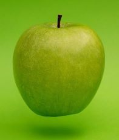
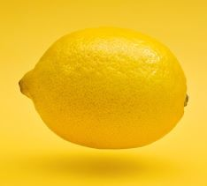

WebTech is a module that is run in the School of Computing at Edinburgh Napier University
Apple, (Malus domestica), domesticated tree and fruit of the rose family (Rosaceae), one of the most widely cultivated tree fruits. Apples are predominantly grown for sale as fresh fruit, though apples are also used commercially for vinegar, juice, jelly, applesauce, and apple butter and are canned as pie stock. A significant portion of the global crop also is used for cider, wine, and brandy. Fresh apples are eaten raw or cooked. There are a variety of ways in which cooked apples are used; frequently, they are used as a pastry filling, apple pie being perhaps the archetypal American dessert. Especially in Europe, fried apples characteristically accompany certain dishes of sausage or pork. Apples provide vitamins A and C, are high in carbohydrates, and are an excellent source of dietary fibre.
Lemon, (Citrus ×limon), small tree or spreading bush of the rue family (Rutaceae) and its edible fruit. Lemon juice is a characteristic ingredient in many pastries and desserts, such as tarts and the traditional American lemon meringue pie. The distinctive astringent flavour of the fruit, either fresh or preserved, is also used to enhance many poultry, fish, and vegetable dishes worldwide. Lemonade, made with lemon, sugar, and water, is a popular warm-weather beverage, and the juice itself is commonly added to tea. Citric acid may amount to 5 percent or more by weight of the lemon’s juice, which is also rich in vitamin C and contains smaller amounts of the B vitamins, particularly thiamin, riboflavin, and niacin.
